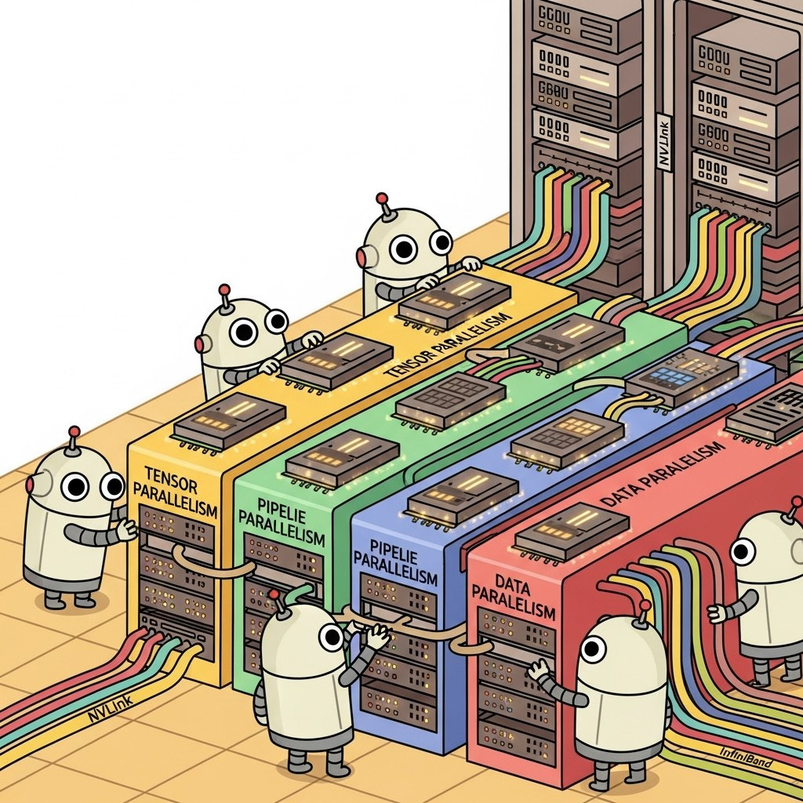

Part Overview
Compute planning, distributed training systems, hardware and chip diversity, edge and on-device LLMs.
Big Picture
Compute planning, distributed training systems, hardware and chip diversity, edge and on-device LLMs.
Chapters
What's Next?
This part begins with Chapter 57: Compute Planning & Infrastructure. Each chapter builds on the previous one, so we recommend reading Part XII in order.